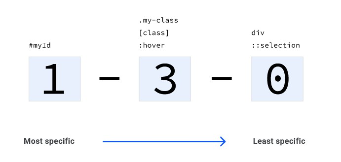

特异性是级联算法的一个关键部分，本节内容将深入了解特异性。
上一节，介绍了级联算法，级联算法是为了解决css规则冲突的算法。而特异性作为其中一个重要部分，我们有必要去弄懂它。
假设有如下css和html：
<button class="branding">color?</button>
button {
color: red;
}
.branding {
color: blue;
}按钮文字将显示蓝色。因为类选择器的权重高于类型选择器。
比较两个选择器的特异性（权重）大小，实际上是计算两个选择器的分数（权重，后面我统称权重），权重大的将会在规则冲突中胜出。
通配选择器（*），没有特异性，它的权重为0。这意味着任何其他权重大于0的选择器都会覆盖通配选择器的规则。
* {
color: red;
}类型选择器，也可以叫做标签选择器，还可以被叫做元素选择器，具体叫法随意，只要你明白就行了。类型选择器和伪元素选择器的权重都为1。
// 类型选择器
div {
color: red;
}
// 伪元素选择器
::selection {
color: red;
}类选择器、伪类选择器和属性选择器的权重为10。
// 类选择器
.my-class {
color: red;
}
// 伪类选择器
:hover {
color: red;
}
// 属性选择器
[href='#'] {
color: red;
}ID选择器的权重为100。
#myID {
color: red;
}内联样式的权重为1000。
<div style="color: red">内联样式的权重为1000</div>含!important的规则的权重为10000，如果你写下了一个!important的规则，前面提到的所有种类的规则都将会被覆盖。
.my-class {
color: red !important; /* 10,000 points */
background: white; /* 10 points */
}前面讲过，一个选择器的权重分数是累加计算的。下面以一个例子说明。
假设有如下html：
<a class="my-class another-class" href="/topic/CSS/1ndvmr393j.html#">A link</a>下面的css，权重为1：
a {
color: red;
}然后，增加一个类使选择器更具体，此时权重为11：
a.my-class {
color: green;
}再添加另一个类名，权重变为21：
a.my-class.another-class {
color: rebeccapurple;
}在上面的基础上，添加一个属性，权重更新为31：
a.my-class.another-class[href] {
color: goldenrod;
}最后，添加一个伪类，权重为41：
a.my-class.another-class[href]:hover {
color: lightgrey;
}至此你应该知道了如何去计算一个选择性的权重（分数）。如何去写一个规则覆盖另一个规则。
下面示意图是为各种选择器提供数字的形式，让我们能快速的可视化的比较规则优先级。

最左侧是id选择器数目，中间是类选择器、属性选择器和伪类选择器的数目，最后面是元素选择器和伪元素选择器的数目。
示例：
// 0, 0, 4 (4个元素选择器)
html body header h1 {
color: red;
}
// 0, 1, 3 (1个类选择器 和 3个元素选择器)
body header.header h1 {
color: blue;
}
// 0, 2, 0 (2个类选择器)
.header .title {
color: orange;
}
// 1, 0, 0 (1个id选择器)
#website-title {
color: green;
}
// 0,4,1
a.my-class.another-class[href]:hover {
color: lightgrey;
}
这样您就可以轻松地比较选择器的优先级：
1, 0, 0 优先级高于 0, 2, 0 (1 ID选择器 > 2 个类选择器)
0、2、0 优先级高于 0、1、3（2 个类选择器 > 1 个类选择器和 3 个元素选择器）
0, 1, 3 wins over 0, 0, 4 (1 class and 3 tags > 4 tags)
0、1、3 优先级高于 0、0、4（1 个类选择器和 3 元素选择器 > 4 个元素选择器）
相当于以字符串形式比较大小。
(完)。